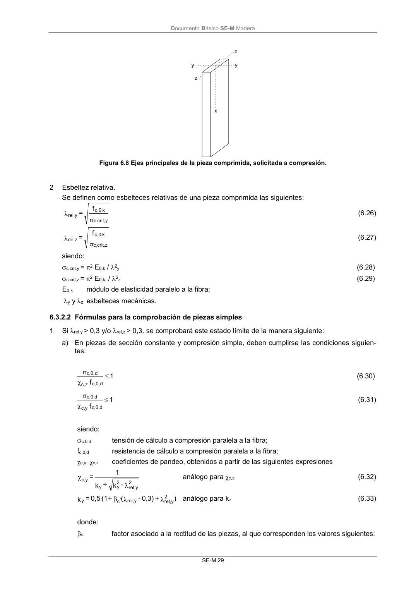
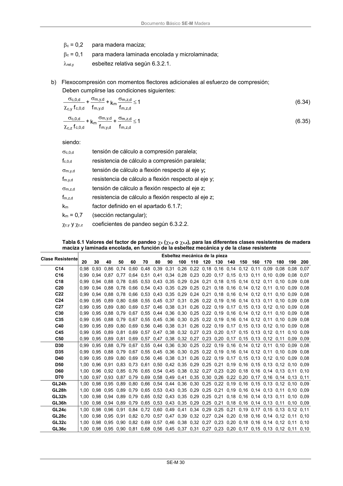

DB-SE-M · 6.3.2.2 Fórmulas para la comprobación de piezas simples · versión 2019-12-20 · capa oficial
Formatos: JSON compacto · Markdown · PDF fuente
Ámbito del documento · texto del ámbito · documento y tablas
ID técnico a0078 · PDF pág. 35-36 · jerarquía no validada por persona · contrastado con el literal de la página 35 (candidato tipográfico); no validado por persona · padre: raíz
6.3.2.2 Fórmulas para la comprobación de piezas simples 1 Si rel,y > 0,3 y/o rel,z > 0,3, se comprobará este estado límite de la manera siguiente: a) En piezas de sección constante y compresión simple, deben cumplirse las condiciones siguien- tes: 1 f d c,0, z c, d c,0, (6.30) 1 f d c,0, c,y d c,0, (6.31) siendo: c,0,d tensión de cálculo a compresión paralela a la fibra; fc,0,d resistencia de cálculo a compresión paralela a la fibra; χc,y , χc,z coeficientes de pandeo, obtenidos a partir de las siguientes expresiones 2 y rel, 2 y y y c, - k + k 1 = análogo para χc,z (6.32) ) + ) 3 0, - (· + (1 · 0,5 = k 2 y rel, y rel, c y análogo para kz (6.33) donde: c factor asociado a la rectitud de las piezas, al que corresponden los valores siguientes: DocumentoBásico SE-M Madera SE-M 30 c = 0,2 para madera maciza; c = 0,1 para madera laminada encolada y microlaminada; rel,y esbeltez relativa según 6.3.2.1. b) Flexocompresión con momentos flectores adicionales al esfuerzo de compresión; Deben cumplirse las condiciones siguientes: 1 f k + f + f d z, m, d z, m, m d y, m, d y, m, d c,0, y c, d c,0, (6.34) 1 f + f k + f d z, m, d z, m, d y, m, d y, m, m d c,0, z c, d c,0, (6.35) siendo: c,0,d tensión de cálculo a compresión paralela; fc,0,d resistencia de cálculo a compresión paralela; m,y,d


PDF fuente redistribuible: copia fiel enlazada en esta página (SHA256 verificado).